车联网安全基础知识之从插线端子分析车内通信网络结构
前言
在不久之后实验室计划拆车，研究车辆的组成结构。拆车是很容易的，但拆完之后能原封不动的装回去且能正常运行还是需要功夫的。正好拿到了一辆车完整的电路图，于是准备研究一下，为后面拆车做准备，免得到时一头雾水。之前也有对插线端子进行过逆向分析，在一堆接口中寻找CAN 、UART 、USB 等接口。在没有手册的条件下，完整逆向出来还是有一定难度的。此外，在自己搭建测试台架中也需要熟悉各个 ECU 和各线束上的接线端子，接下来就请跟随我进入到汽车内部看一看 ECU 的接线端子。
插线端子
通过插线端子看车内的网络结构，向下看各 ECU 与其他 ECU 或传感器之间的连接方式、通信方案等;向上分析个 ECU 所在的网络域，梳理车内网络结构。
下面以不同网络为分类，解读各 ECU 的插线端子的用途，最后以 CAN 网络为主线梳理出整车网络拓扑。
网关
网关是整个网络中的核心，控制多路CAN、以太网网络的各类消息的处理和转发。网关最重要的功能是将不同的网络域进行隔离。从网关的插线端子来看，内部CAN网络被划分了为 6 个网络。分别是 DiagBUS(诊断)CAN、TBUS(远程监控)CAN、CBUS(底盘)CAN、EBUS(车身)CAN、IBUS(信息娱乐)CAN、EVBUS(能量)CAN。下面按照这 6 个网络分析车内网络结构。
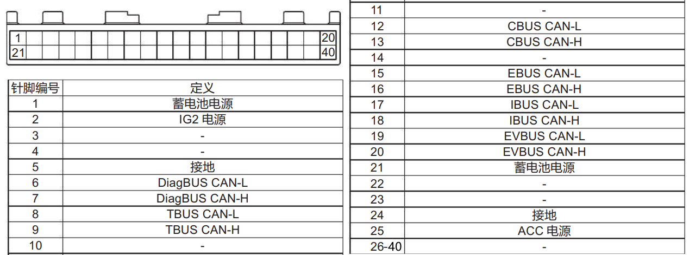
TBUS 远程诊断网络
TBUS 中只有 T-BOX 一个ECU。T-BOX 是车端智能网联中最核心的部件之一，集成 GPS、外部通信接口、电子处理单元、微控制器、移动通信单元和存储器等功能模块。提供的功能有网络接入、OTA、远程控制、位置查询/车辆追踪、电池管理、位置提醒、eCall、远程诊断、平台监控/国家监管等。下图中插线端子上 CAN、SPK、MIC、唤醒信号灯等接口。T-BOX 通过 TBUS CAN 与网关相连；T-BOX 上的 SPK(扬声器) 与 MIC(麦克风) 用于紧急呼叫 等服务。除了下图的接口外，其他车的 T-BOX 可能还有用于模拟以太网的 USB 端子、用于调试的 UART 串口等。
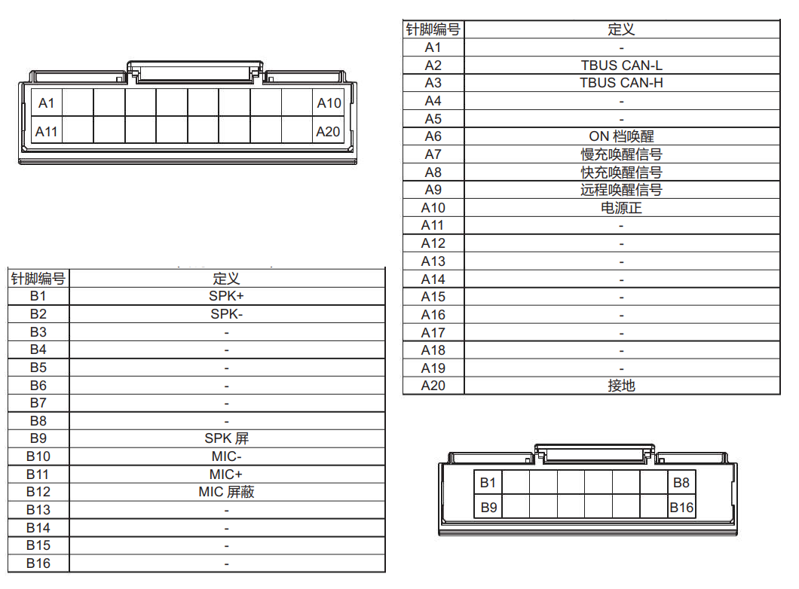
EVBUS 能量域/动力域
EVBUS 能量域是电动汽车新能源的叫法，对应传统网络中的动力域。能量域主要的功能是给车载电池充电以及控制驱动电机为车辆供能。能量域中有 BMS 电池管理系统、MCU 驱动电机控制器、OBC 车载充电控制器、CMU 交流充电控制单元、电子水泵控制器等。
BMS 电池管理、快充、慢充系统
电动汽车的动力输出依靠电池，而电池管理系统BMS(Battery Management System)则是其中的核心，负责控制电池的充电和放电以及实现电池状态估算等功能。电池管理系统与电动汽车的动力电池紧密结合在一起，通过温度传感器进行实时检测，还进行热管理；通过 EVBUS 与车载总控制器、电机控制器、能量控制系统、车载显示系统等进行实时通信。充电方式有快充（直流)和慢充（直流)两种。在快充网络中，BMS 充当 EVBUS 与 FCBUS 之间的网关；在慢充网络中，BMS 通过控制 CMU 控制对电池的慢充。

WEP-FD 电机水泵控制器
电机水泵控制器控制电机水泵为电机电控散热提供冷却水循环和风冷，通过 CAN 总线接入能量域。
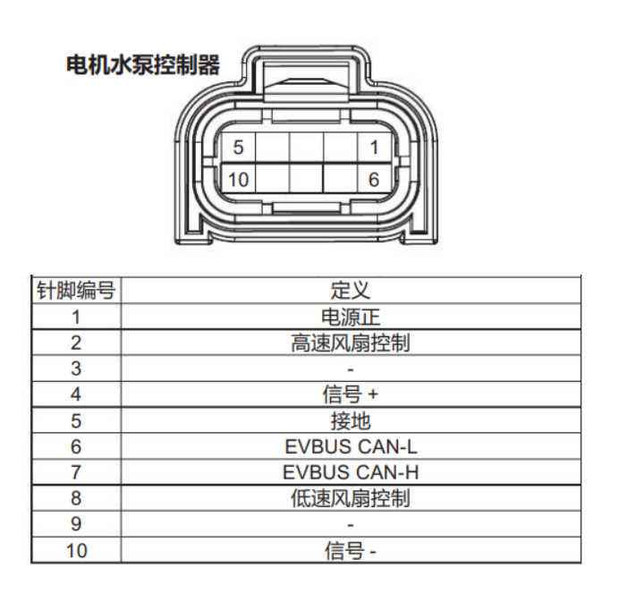
CBUS 底盘域
底盘域为整个底盘系统的协调者，即是将车辆运动控制进行总体把控。接入到 CAN 网络底盘域中的控制器包括 ABS 防抱死制动系统、EPB 电子驻车制动控制器、EPS 电动助力转向系统、P 档控制器、ESK 档位控制器、VBP 真空泵控制器等。
ABS 防抱死制动系统
ABS(Antilock Brake System) 防抱死制动系统是在汽车制动时，自动控制制动器制动力的大小，使车轮不被抱死，处于边滚边滑（滑移率在20%左右)的状态，以保证车轮与地面的附着力在最大值。ABS 采集四个轮子上的转速传感器信号，自动控制制动器制动力的大小，防止车辆抱死。
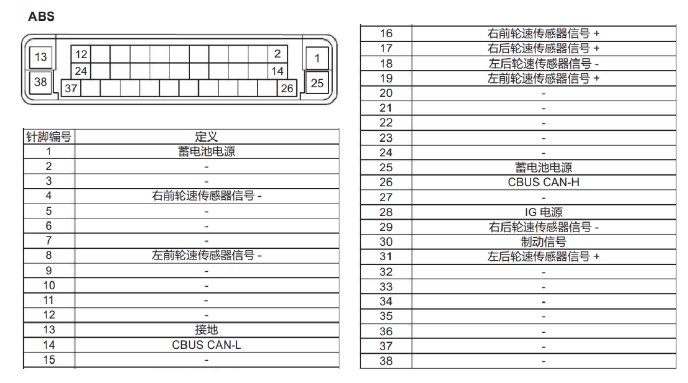
EPB 电子驻车制动控制器
EPB(Electrical Park Brake) 电子驻车制动系统既通常所说的电子手刹，采用电子控制的方式来完成驻车制动。EPB 驻车通过控制四个EPB电机完成驻车制动。
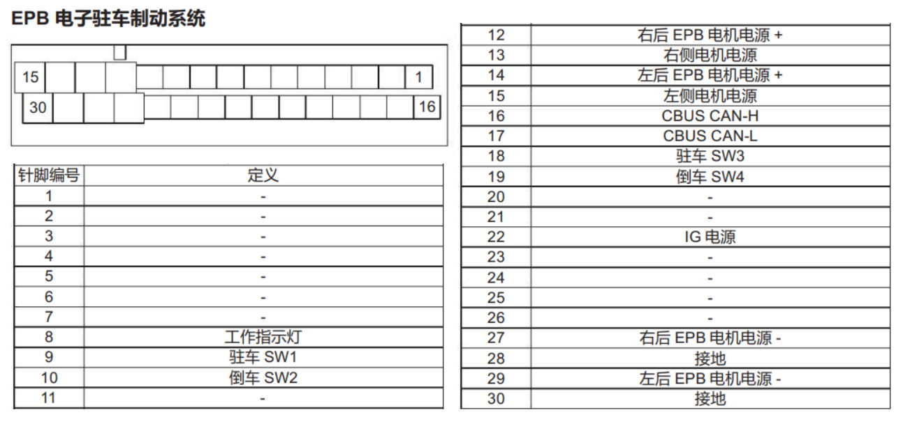
EPS 电动助力转向系统
EPS(Electric Power Steering) 电动助力转向系统是依靠电机提供辅助扭矩的动力转向系统。EPS 根据驾驶员意图和车辆的运行工况而进行助力的转向系统。EPS 的控制过程是动力转向系统综合控制的过程，通过底盘域CAN网络与其他电子控制器进行通信。
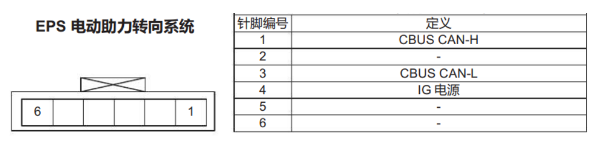
P 档控制器
电动汽车上的P挡控制，其作用等同于传统自动变速器的“驻车挡”。
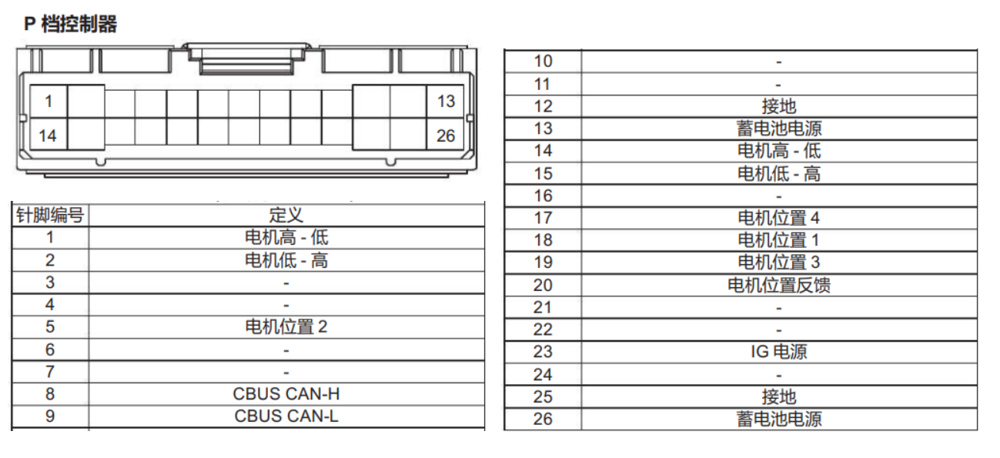
ESK 档位控制器
旋转式电子档位控制器用于切换 D档、R档、N档、S档、L档等。
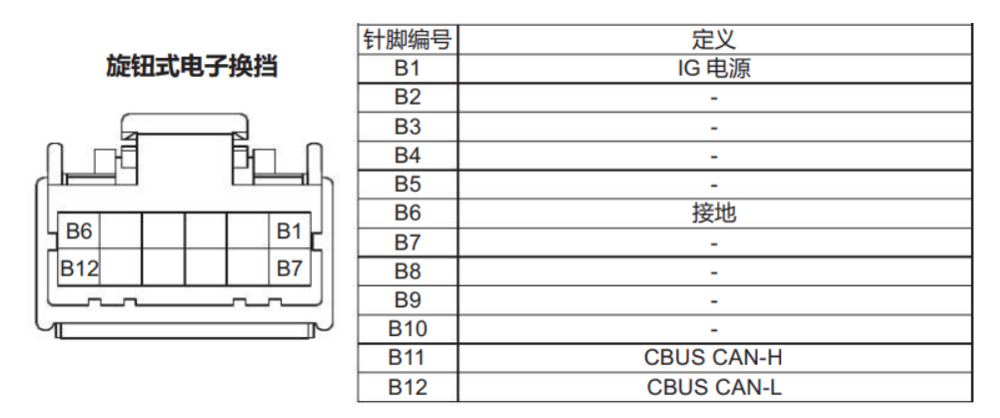
VBP 真空泵控制器
真空泵用于产生真空，利用产生的负压增加制动力。
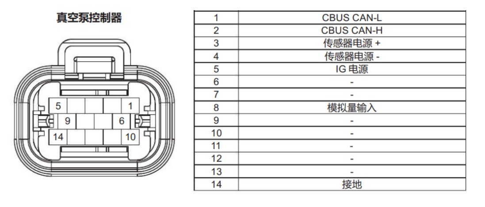
IBUS 信息域/智能座舱域
智能网联汽车之所以叫做智能网联，智能座舱在其中扮演着至关重要的角色。智能座舱中包括中控娱乐系统、组合仪表、空调舒适系统、低速行人警示器等。
中控娱乐系统
中控面板可能是传统按钮式的，也可能是更加现代的电子式。通过中控面板上的按钮控制空调，有中控通过IBUS传达给空调控制器。
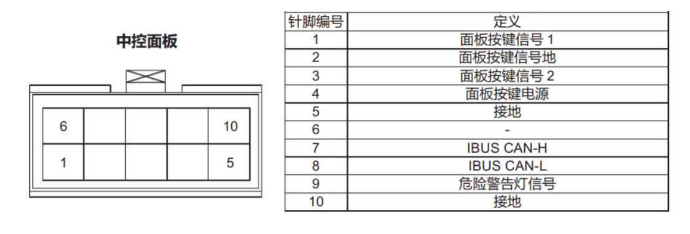
音响主机C
音响主机也被叫做车机、IVI、中控主机等，连接有控制按钮、扬声器、麦克风、摄像头等。
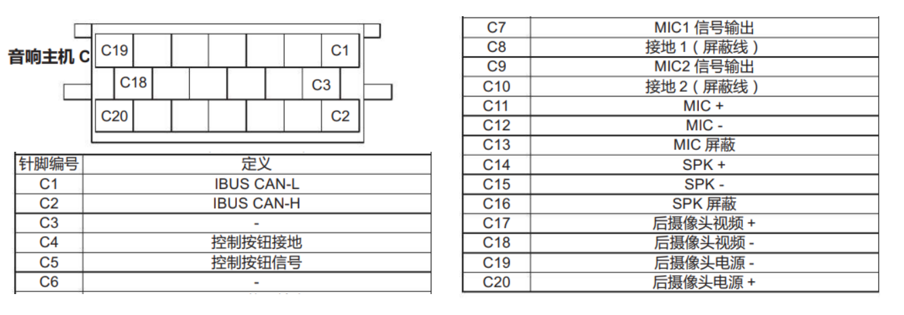
组合仪表
组合仪表通过IBUS接收汽车行驶和其他的转态数据并展现在仪表上。组合仪表与车机都在智能座舱域下，没有经过网关，是可以直接互通的。

ACP 空调控制器
空调控制器接收 IBUS 上的空调控制信息，驱动空调制热或制冷。同时有各种传感器进行监控。
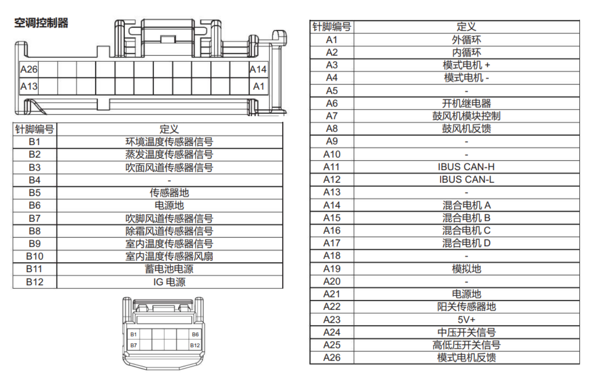
EAS 电动压缩机控制器
空调控制器通过 CAN 控制 EAS 空调压缩机驱动器制热或制冷。
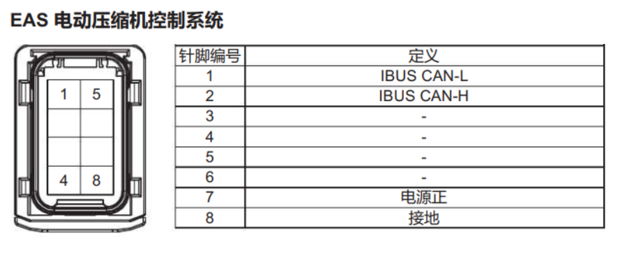
PTC 电加热控制
通过 CAN 控制 PTC 加热控制器调节温度。
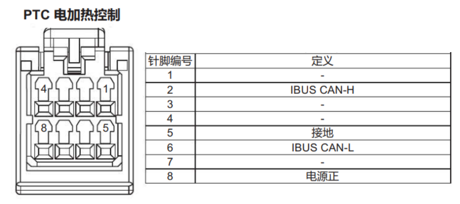
低速行人警示器
由于纯电动汽车在低速行驶时噪音相对较小，周边行人很难察觉。为了提高行车安全性，该系统可以在车速低于30公里时发出警示声音，借此可以使得周边行人更好地察觉。
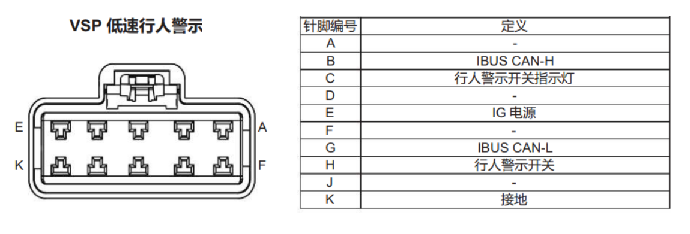
EBUS 车身域
车身域主要包括车身附件控制(门窗控制、门锁等)、内外饰附件控制（天窗、雨刮、内外灯等)、启动控制、数字钥匙等。车身域中的主要模块有 BCM 车身控制模块、PEPS 一键启动开关、无钥匙进入、TPMS 胎压检测、PAS 泊车辅助雷达、AVM 全景摄像模块、SDM 安全气囊控制器、ESCL转向柱锁、DVR行车记录仪等。
车身域控制系统特点：
- 涉及多领域，个性化设置，如作为座椅位置记忆；语音控制，控制车窗等；
- 涉及系统多，与整车绝大多数其他系统存在信息交互：动力系统、娱乐系统等；
- 涉及功能安全，近灯光控制(ASILB)、前雨刷控制(ASILB)、整车电源状态管理(ASILB)、车窗防夹(ASILA)。
- 涉及高感知功能，重要程度高，影响车辆启动、用户进入；车窗、灯光控制等使用频率高。
车身域控制系统涉及多个技术领域，接口类型多，资源需求不同车型变化大;同时又涉及功能安全以及高感知的功能，有较高的可靠性设计要求;另外还涉及PEPS、TPMS、蓝牙、NFC 等无线通讯技术。
BCM 车身控制模块
BCM(（Body Control Module)车身控制模块的功能包括：电动门窗控制、中控门锁控制、遥控防盗、灯光系统控制、电动后视镜)加热控制、仪表背光调节、电源分配等。
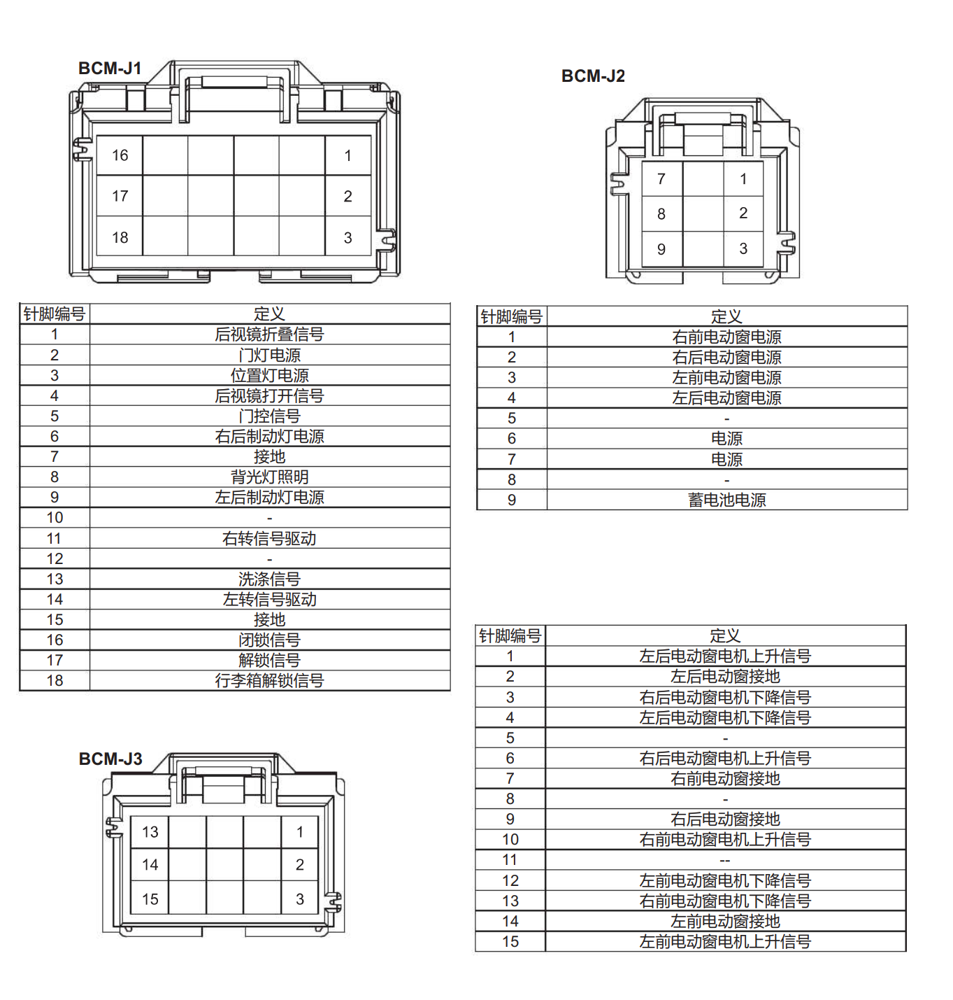
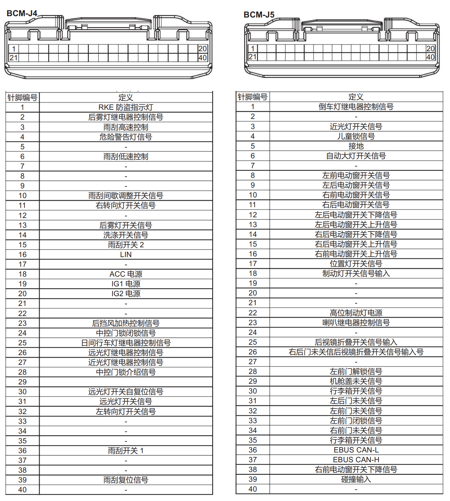
PEPS 无钥匙进入与一键启动
PEPS(Passive Entry Passive Start)无钥匙进入及启动系统， 由控制器、智能钥匙中的射频(RF)发射器和汽车端的接收器等组成。当钥匙在有效范围内，车主拉动车门或按下一键启动开关， 相应的模块会发送中断信号来唤醒主控制器，开始整个通信过程。整个过程无需使用钥匙，即可打开车门或者启动发动机。主要零部件有遥控钥匙、天线、车身控制模块(BCM)、涉及核心技术有RFID识别技术、加密算法、 EMC技术。
根据无钥匙进入的插线端子可知有两组天线，用户探测钥匙是否在周边。当钥匙在可识别距离内，将车门设置为可打开模式。
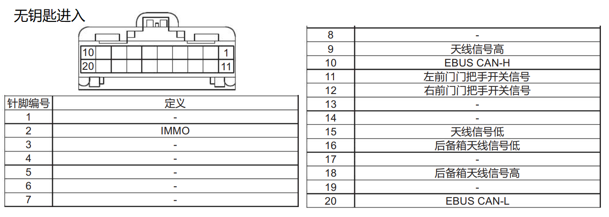
SSB(SSB Start Stop Button,一键启动按键) 俗称点火按开关，用于启动发动机。
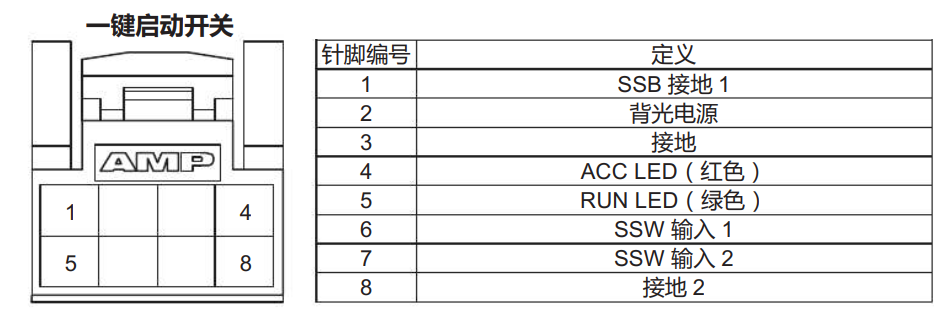
现在也出现了 PEPS 与 BCM 融合的方案。
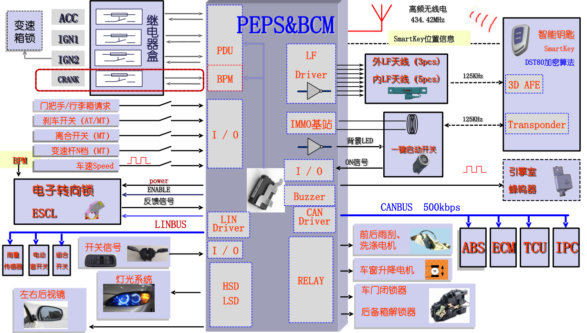
TPMS 胎压检测
TPMS(Tire Pressure Monitoring System，胎压智能监测系统)是一种采用无线传输技术,工作频率在 433.92 MHz，利用固定于汽车轮胎内的高灵敏度微型无线传感装置在行车或静止的状态下采集汽车轮胎压力、温度等数据，并将数据传送到驾驶室内的显示屏中，以数字化的形式实时显示汽车轮胎压力和温度等相关数据，并在轮胎出现异常时（预防爆胎)以蜂鸣和语音等形式提醒驾驶者进行预警的汽车主动安全系统。确保轮胎的压力和温度维持在标准范围内，起到减少爆胎、毁胎的概率，降低油耗和车辆部件的损坏的作用。中央监视器接收 TPMS 监测模块发射的信号，将各个轮胎的压力和温度数据显示在屏幕上，供驾驶者参考。如果轮胎的压力或温度出现异常，中央监视器根据异常情况，发出报警信号，提醒驾驶者采取必要的措施。
TPMS 检测到胎压数据经过 EBUS CAN 传输给其他 ECU 使用。
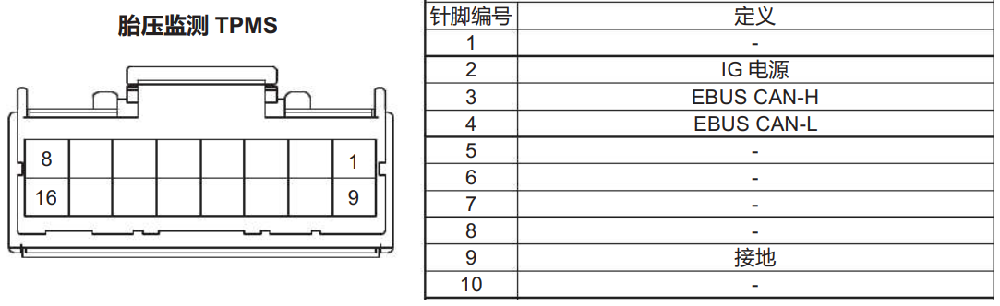
PAS 泊车辅助雷达
PAS(Parking Assist System,泊车辅助系统)利用倒车雷达和为驾驶员在狭窄空间停放车辆时提供援助，通过发送声音信号以及在中央显示屏上显示相应图形指示与障碍物的距离。
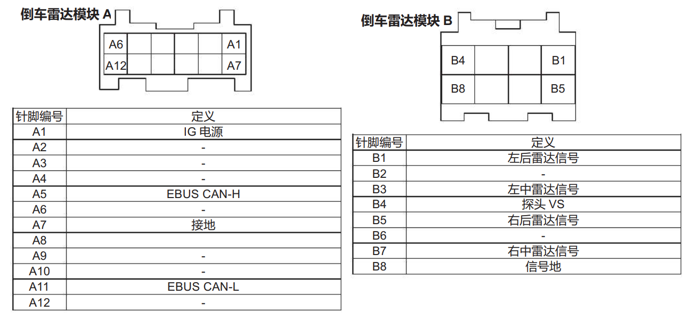
AVM 全景摄像模块
AVM(Around View Monitor,全景影像的系统)通过多个超大广角鱼眼镜头拍摄图像，然后经过数据处理对拍摄图像进行畸变矫正以及拼接，形成周围影像。为驾驶员提供车身四周的俯视图像，消除驾驶员的视野盲区，泊车时可提供有效的视觉辅助功能。最主要的接口是变道灯、摄像头视频和供电接口。
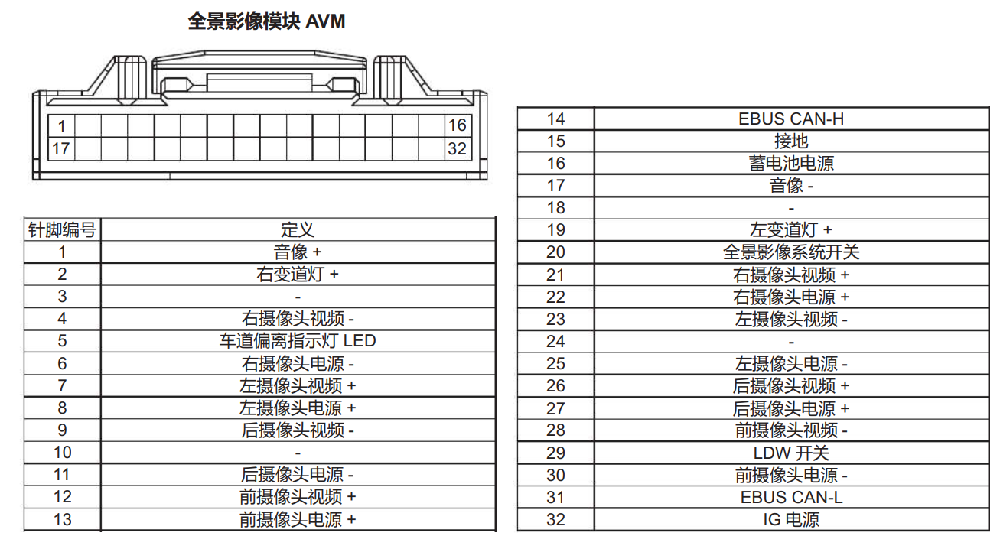
SDM 安全气囊控制器
SDM 安全气囊控制器管控安全气囊和安全带。
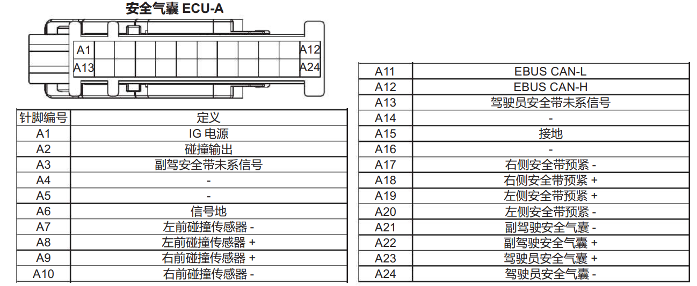
ESCL 转向柱锁
ESCL（Electronic Steering Column Lock，电子转向柱锁)是车辆防盗系统的一部分，用于无钥匙进入无钥匙启动系统中锁止和解锁方向盘。ESCL 的上锁和解锁动作通过控制 ESCL 内的电机动作来实现。ESCL产品的安全等级需要根据整车系统构架和ISO26262进行评估与计算。此外还需满足不同国家和地区的法规要求（如GB15740、 ECER116等 )。
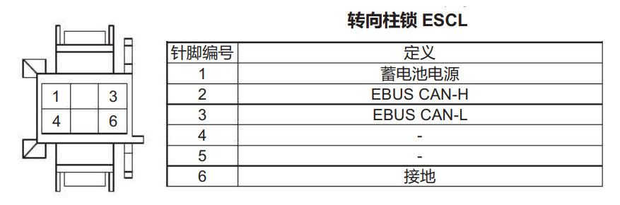
DVR 行车记录仪
DVR 行车记录仪也有接入到 EBUS CAN 网络中。
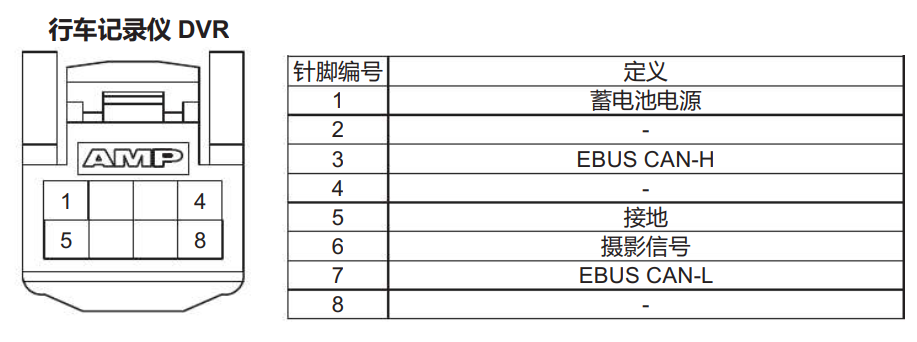
其他
后排标准USB接口
后排的标准USB接口只有电源针脚，没有数据针脚。而前排的 USB 接口大多是全功能的 USB 接口，既可以充电也可以传输数据。
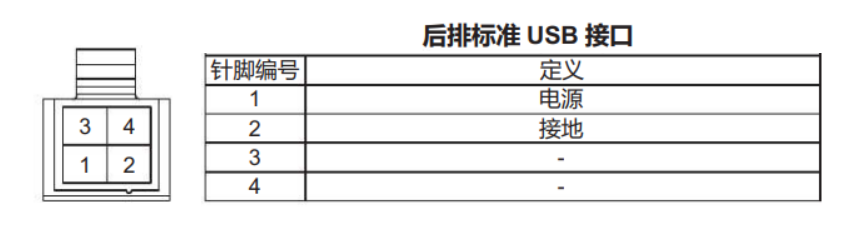
点烟器
一直很好奇点烟器是不有其他特殊的功能，看到只有电源针脚，原来是我想多了。
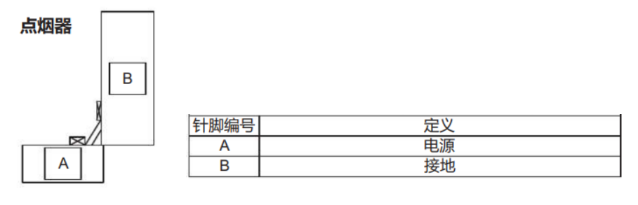
PEU 电机控制器
新能源汽车最核心的技术“三电”，即电机、电控、电池。电机控制器是用来控制电动车电机的启动、运行、进退、速度、停止以及其它电子器件的核心控制器件。PEU 电机控制器同时接入到了 EVBUS 能量域和 CBUS 底盘域中。
网络拓扑
根据各 ECU 插线端子上的通信接口将同一个网络域上的 ECU 串联，然后并不同网络进行并联。上文中在解读各 ECU 端子中已进行分类，现只需要将上述的内容绘制成图即可，画完之后的图如下。

整个网络以网关为核心，一共有8个子网络，分别是远程监控网络、诊断网络、能量域、快速充电网络、底盘域、信息域、车身域以及LIN总线网络。
整车线束
从接线端子梳理完这个网络结构后，返回到汽车本身，汽车网络是由线束连接的，各插线端子最终都会连接到线束上，所以我们有必要去了解整车线束。
汽车线束是汽车电路的网络主体，没有线束也就不存在汽车电路。线束是指由铜材冲制而成的接触件端子（连接器)与电线电缆压接后，外面再塑压绝缘体或外加金属壳体等，以线束捆扎形成连接电路的组件。
- 前舱线束：布置在汽车前舱区域，用于连接车身控制系统。前舱线束与仪表线束、PEU线束、前端线束、前保险杠线束、车身线束相连。ABS系统、BMS、PEU、灯具，前雨刮洗涤系统，电源系统、中央电器盒、油门加速踏板等位于前舱区域。
- 仪表线束：布置在汽车仪表区域，用于连接驾驶系统、娱乐系统、空调系统等电器。仪表线束与前舱线束、车身线束、顶棚线束、空调线束相连。组合仪表、音箱主机、中控面板、中控显示屏、扬声器、OBD 诊断接口、ESP、ESCL 转向柱锁、灯光组合开关、电动后视镜、网关、点烟器、P 档控制器、ESK 旋转式电子换挡、一键启动开关、驾驶员/副驾驶安全气囊、TPMS、BCM、吹脚风道、除霜风道、行李箱与C2L开关等连接在仪表线束上。
- 车身线束： 布置在汽车车身，是汽车线束中的骨干，与前舱线束、仪表线束、前保险线束、后保险线束、座椅线束相连。TBOX、EPB、执行人警示开关、GPS、CMU 交流插座控制单元、后备箱天线、行李箱锁电机、行李箱灯、倒车雷达模块、左右侧安全气囊、左右后组合灯、左右侧气帘、高位制动灯、后排USB接口、后摄像头、AVM 全景摄像模块等连接在车身线束上。
- 前端线束：布置在汽车前端，与前舱线束相连。喇叭、左右侧碰撞传感器、DC-CHM、机舱盖锁、行人警示器连接在前端线束上。
- PEU(动力电子单元)线束：PEU线束与前舱线束相连，P档电机、电机水泵控制器、正空泵电源、真空泵控制器、蓄电池正极起动机等连接在PEU线束上。
前保险杠线束：前保险线束与前舱线束相连，快充盖锁、前摄像头、左右日间行车灯等连接在前保险杠线束上。
后保险杠线束：后保险杠线束与车身线束相连，中/后雷达、后雾灯等连接在后保险杠线束上。
车门线束: 每一扇门拥有一根车门线束。车门线束与车身线束相连，扬声器、后视镜、玻璃升降开关、玻璃升级电机、门锁总成、门把手开关等连接在车门线束上。
顶棚线束：顶棚线束与仪表线束相连，行车记录仪、顶灯、ADAS 前摄像头、天窗、雨量传感器等连接在顶棚线束上。
- 空调线束：空调使用的线束，通过连接仪表线束接入整车线束中。蒸发温度传感器、内外循环电机、模式电机、混合风机等连接在空调线束上。
- 座椅线束：布置在座椅区域，用于调节座椅高度、加热等。通过连接车身线束接入整车线束中。座椅加热控制器、座椅加热丝、座椅高度调节电机、座椅前后调节电机、座椅靠背调节电机等连接在座椅线束上。
整车线束的参考位置如下。

插线端子在车联网安全上的思考
在黑盒的情况下，对零部件的物理分析往往是插线端子开始的，这第一步就是找到电源针脚，找到供电针脚上电后才开始了正式的研究工作。梳理出各个 ECU 常见的插线端子，有助于简化分析流程，将精力投入到更为深入的漏洞挖掘工作之中。
此外，在插线端子上也可以找到一些脆弱的攻击点。例如，DVR 行车记录仪，从插线端子来看 DVR 接入到了车身域 CAN 网络中。那么就可以从行车记录仪入手，拿下 DVR 控制权后，进入到车身域中，而 BCM 也正好处于同一网络之中，BCM 又控制着车门、车灯。这一条控车的逻辑链路，当下没有被大家广泛关注，重点人在云端、TBOX 或 IVI上。从行车记录仪控车的这条路，星舆实验室正在积极探索之中，我们通过无接触的方式利用未知漏洞已经拿到某车行车记录仪的系统权限。
在研究插线端子中，我们还有其他的一些想法。欢迎大家和我们一起研究、探讨车联网安全，共同守护出行安全。